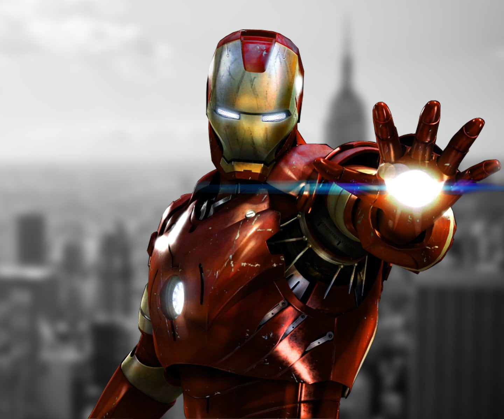
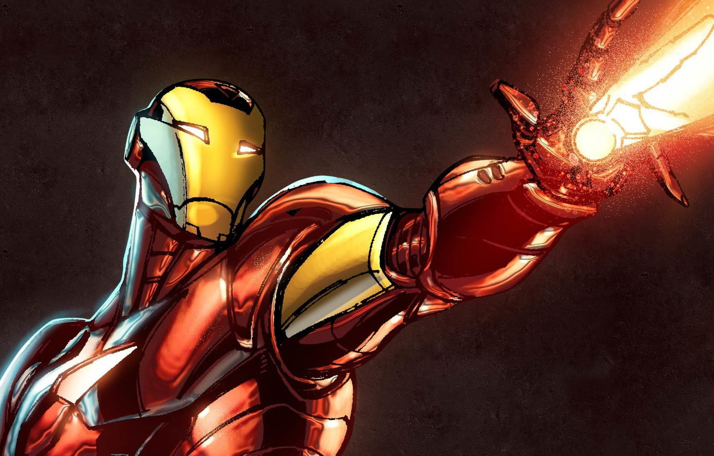
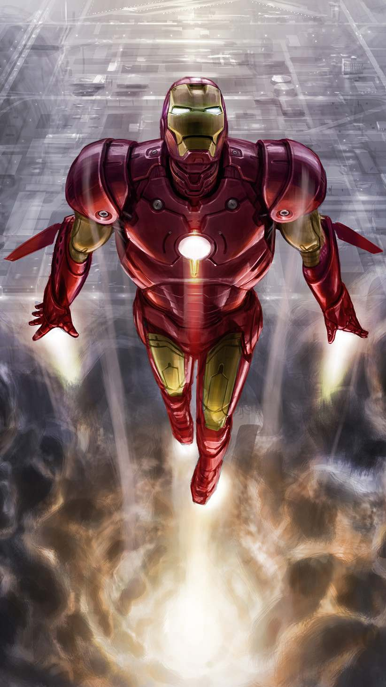
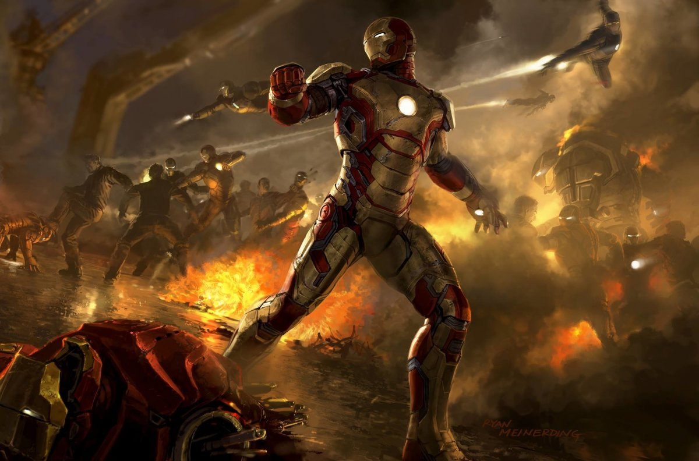
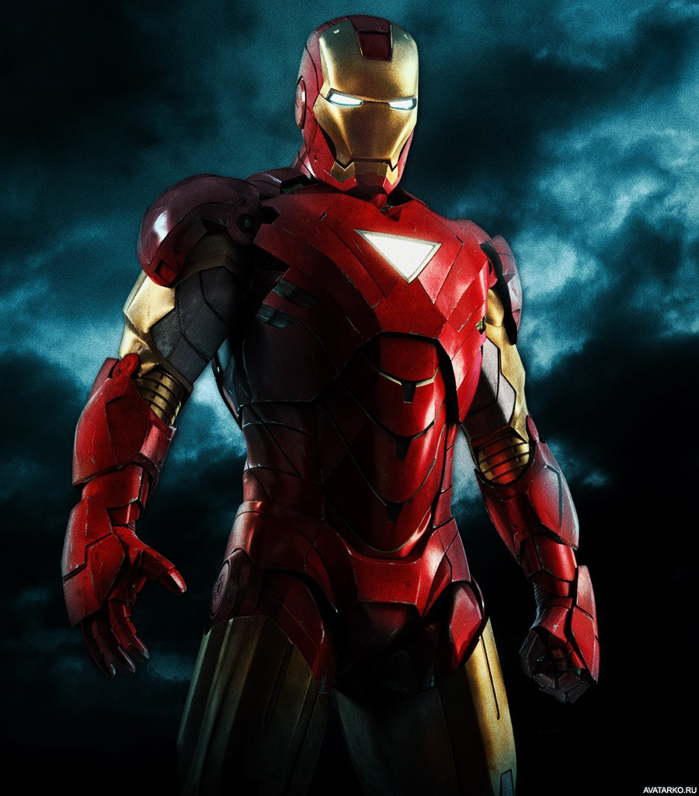
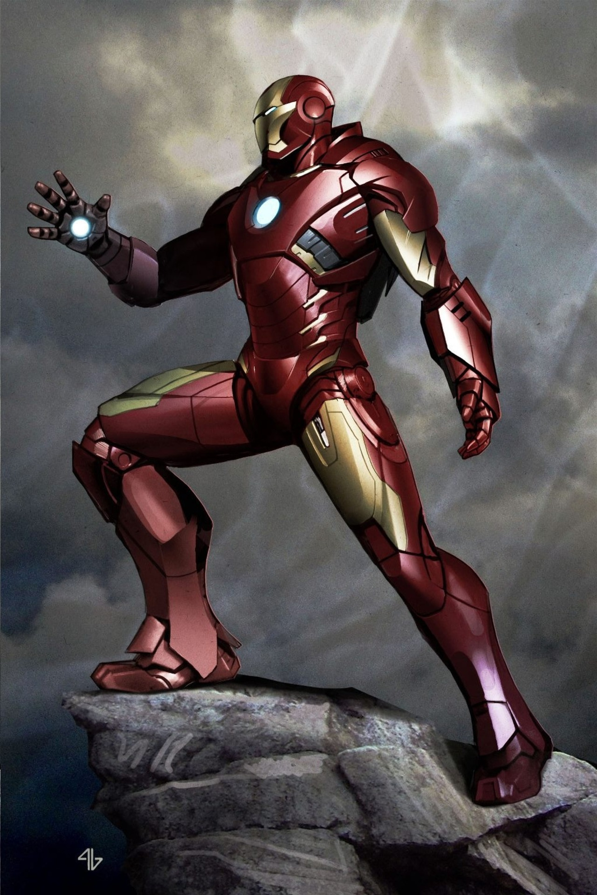
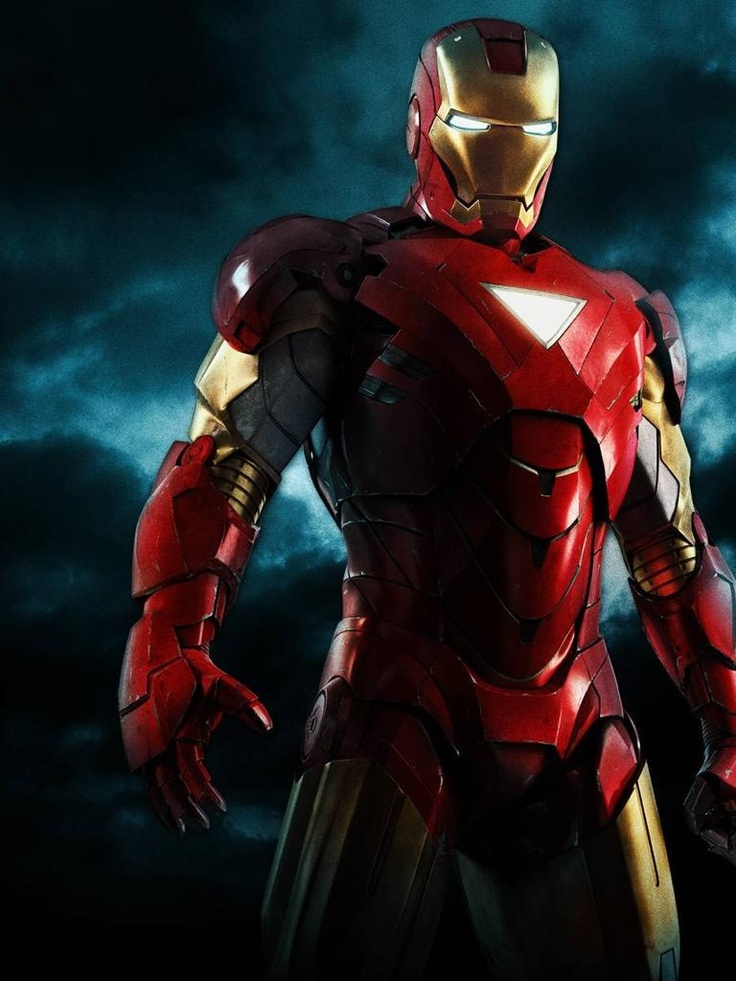
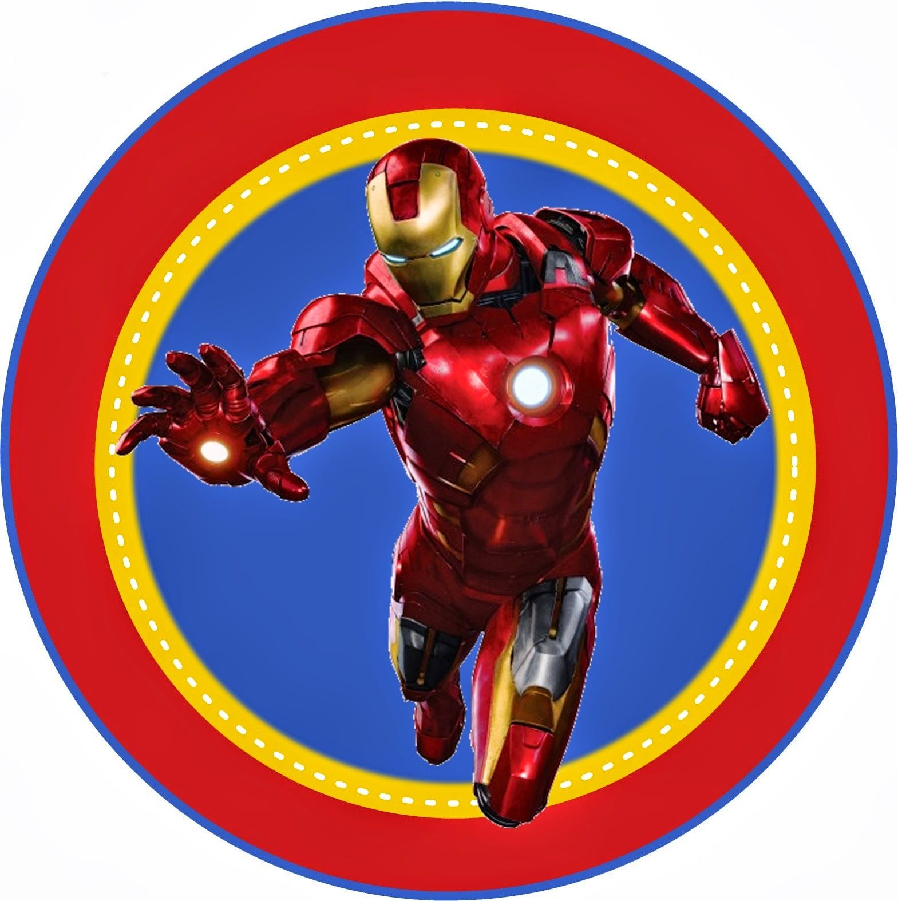
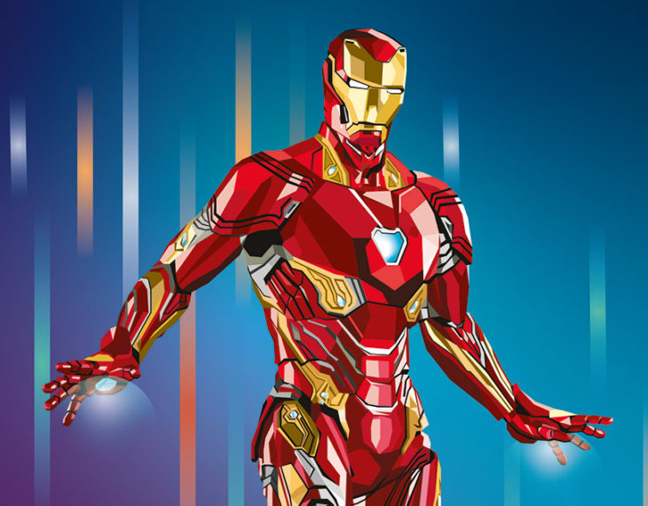

В первоначальном варианте своей биографии Тони Старк, гениальный изобретатель, муж Верналии Лодж и богатейший промышленник с репутацией плейбоя, страдает от ранения, полученного им в плену, где его вынудили разработать для террористов оружие массового поражения. Вместо этого он создаёт высокотехнологичный костюм-броню, с помощью которого сбегает из плена. Позднее Старк улучшает свою броню вооружением и устройствами, созданными на базе ресурсов его компании, и использует доспех, чтобы защищать мир в облике Железного человека, первое время скрывая свою личность
Железный человек впервые появился в комиксе Tales of Suspense #39 (март 1963)
Предприниматель Изобретатель Генеральный директор Stark Industries и Stark Expo директор «Щ.И.Т.»
        